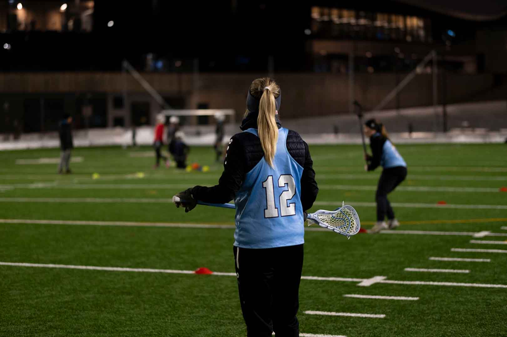

Lacrosse er en idrett med lang og stolt
historie, helt tilbake til 1600-tallet.
Dens opphav var som et spill
mellom
ulike grupper av urfolk i Nord Amerika og
idrettens seremonier er fremdeles preget av
deres rike
tradisjoner.
Idretten er en lagbasert ballsport som spilles
med ti spillere på hvert lag, på en bane
omtrent av samme størrelse som en vanlig
fotballbane. Det finnes også innendørs
lacrosse, kalt indoor eller box lacrosse.
Spillerne er utstyrt med køller med en
nettlomme i enden (la crosse) som brukes til
å fange og kaste ballen
mellom spillerne og
i mål. Taktisk minner spillet mye om
ishockey, hvor du har et offensivt spill som
handler om å sette opp spill og skaffe
medspillere åpne skudd, mens keeper er
beskyttet av en vernet sone
rundt målet.
For herrer er spillet er svært fysisk og det
brukes derfor beskyttelsesutstyr og hjelm.
Send mail til Stina Bjørnæs for påmelding; stina@oslolax.no
Eller kontakt oss på Telefon:
77 55 66 22
